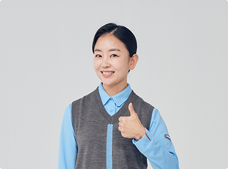

렌탈 고객의 서비스 & 혜택
-

- 최고의 서비스 전문가
-
- 12,000여 명의 전문관리인력
- 깐깐하고 신속한 서비스
-
- 무상 A/S 서비스
-
-
렌탈서비스 이용 고객 무상 A/S
(단, 해체/이전설치 및 고객 부주의시 유상)
-
렌탈서비스 이용 고객 무상 A/S
-
- 수질검사 서비스
-
- 정수기 렌탈/멤버십 고객 중 검사를 요청하시는 고객
- 1년 1회까지 무료로 제공 가능
-
KOLAS 공인시험기관이자 환경부 지정 먹는 물
검사기관인
코웨이 환경분석센터에서 분석